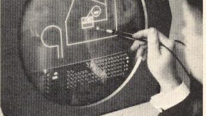

封面介绍

人民、公司和计算机系统，永远改变了工程实践。——David E. Weisberg
这本书花费了五年以上的时间制作，现在可以在这个网站上免费获取并供个人使用。您可以在线阅读，也可以下载并打印以供日后阅读。如果公司希望制作特定材料的多个副本，请通过下面的地址与我联系。
为了免费获取超过650页的材料，讨论了使CAD工业成为今天这个样子的人、公司和产品，我希望读者可以为一个对我非常重要的基金会做出贡献。在上世纪90年代，我失去了两个姐姐，都是因为癌症。我相信你们中的许多人也有亲戚和熟人受到这种疾病的困扰。我在丹佛的一个非营利组织中非常活跃，该组织为癌症研究和患者支持筹集资金。该组织的捐赠部分称为科罗拉多癌症联盟基金会。您可以将支票开给基金会，并将其寄到下面的地址（仅限美国资金），或通过PayPal进行捐赠。
请坐下来，享受一次近60年的旅行，彻底改变了工程设计的实践。在您开始之前，最后一句话，如果您发现这篇材料中有任何错误或对我写的内容有异议，请告诉我。此外，如果您有照片或插图希望被纳入此文档，请把它们发送给我。将这本书放在网上可以产生一个动态文档，我将根据需要进行更新。